| 首页 | 全球动物保护日历 | 濒危动物图鉴 | 国际上采取措施 | 行动指南 | Every Live Is A Part Of The Planet We Called Earth. |
1. 全球动物保护公约（CAP）
背景：由国际动物保护联盟（ICFAP）起草，旨在建立一个全面的国际框架，以推进动物福利、公共健康和环境保护。 目标：设立与动物互动和对待动物的最低标准，为各国提供处理动物保护问题的指导。 主要内容： 动物福利：确保所有动物的基本需求得到满足，包括食物、水、适当的居住环境、医疗护理和避免不必要的痛苦。 公共健康：防止动物疾病传播给人类，减少人畜共患病的风险。 环境保护：保护动物栖息地，维护生态平衡，防止生物多样性丧失。 2. 濒危物种保护 《迁徙物种公约》（CMS）： 3. 联合国动物健康与保护公约（UNCAHP）
|
|
1. 动物福利立法： 2. 公众教育和意识提升： 3. 科技和创新： 4. 跨国合作： 通过这些多样化的措施和协议，国际社会在动物保护方面取得了显著进展，但仍需不断努力，以应对新的挑战和问题。 |
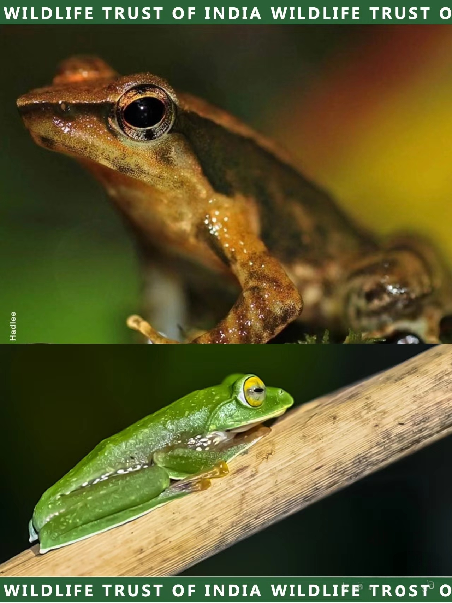 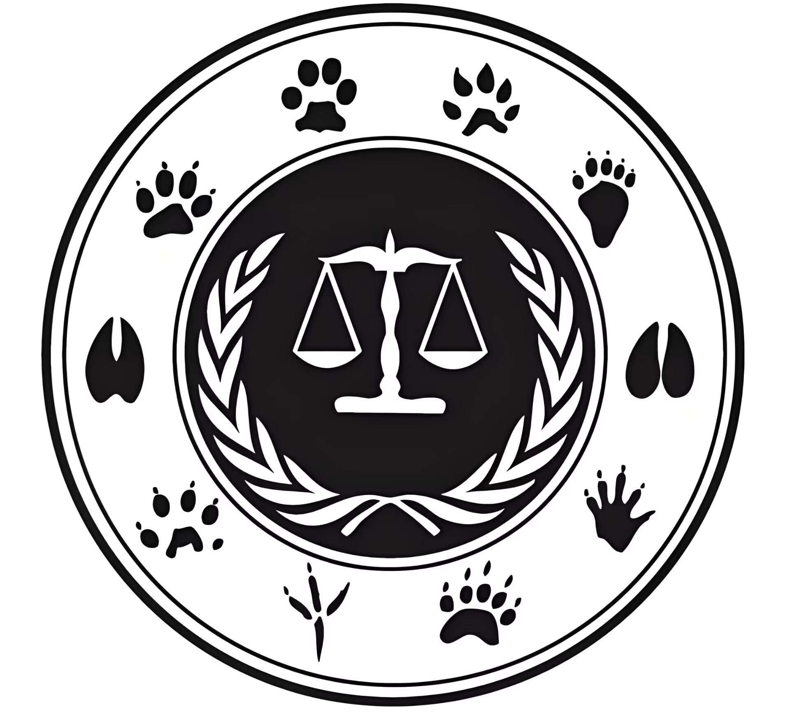 |
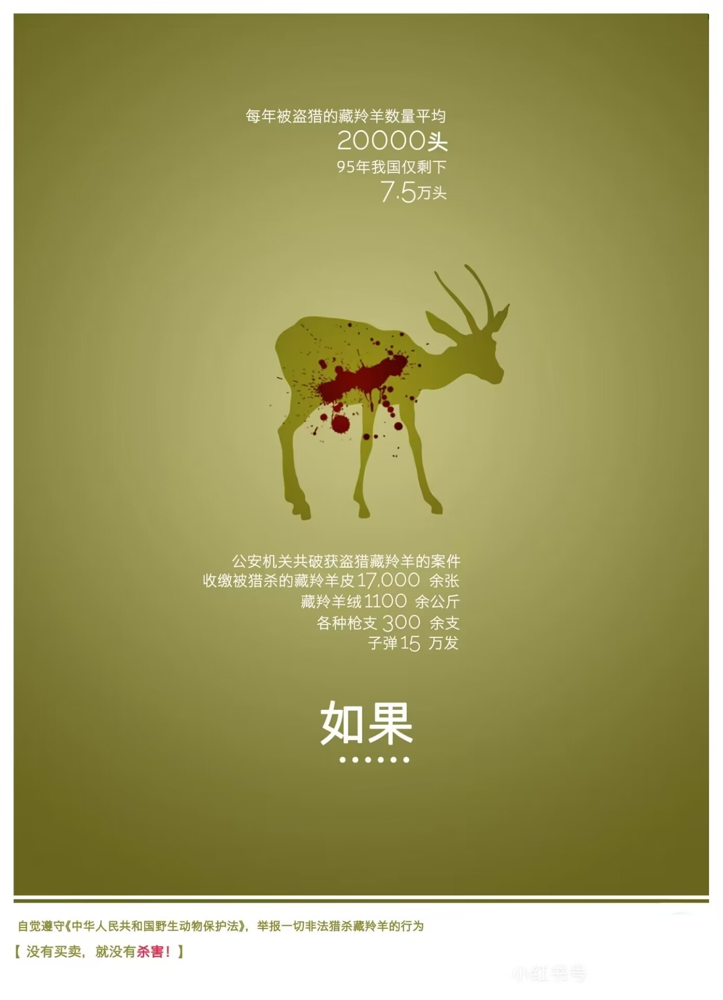 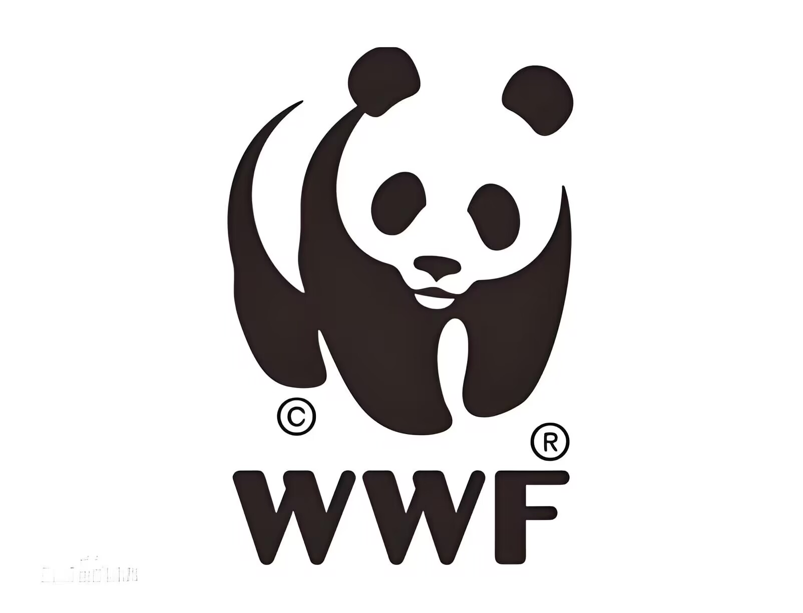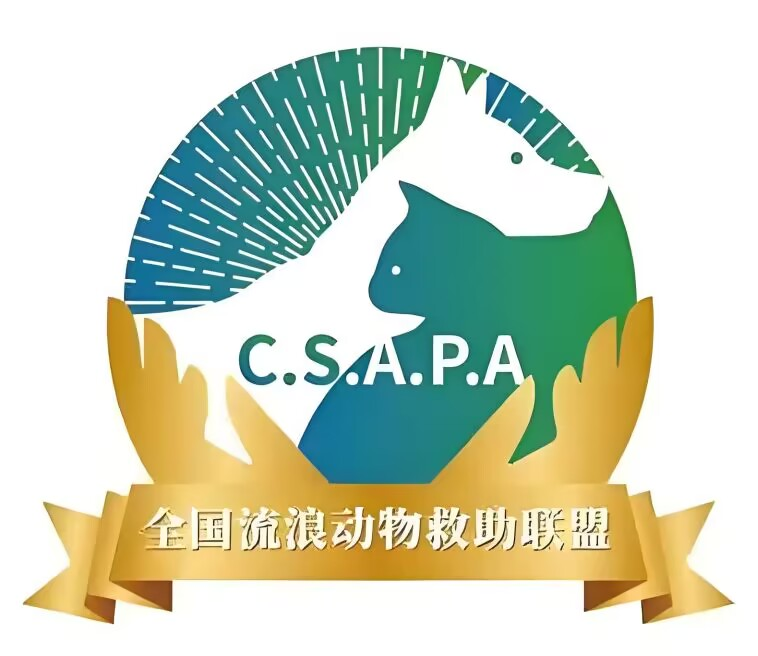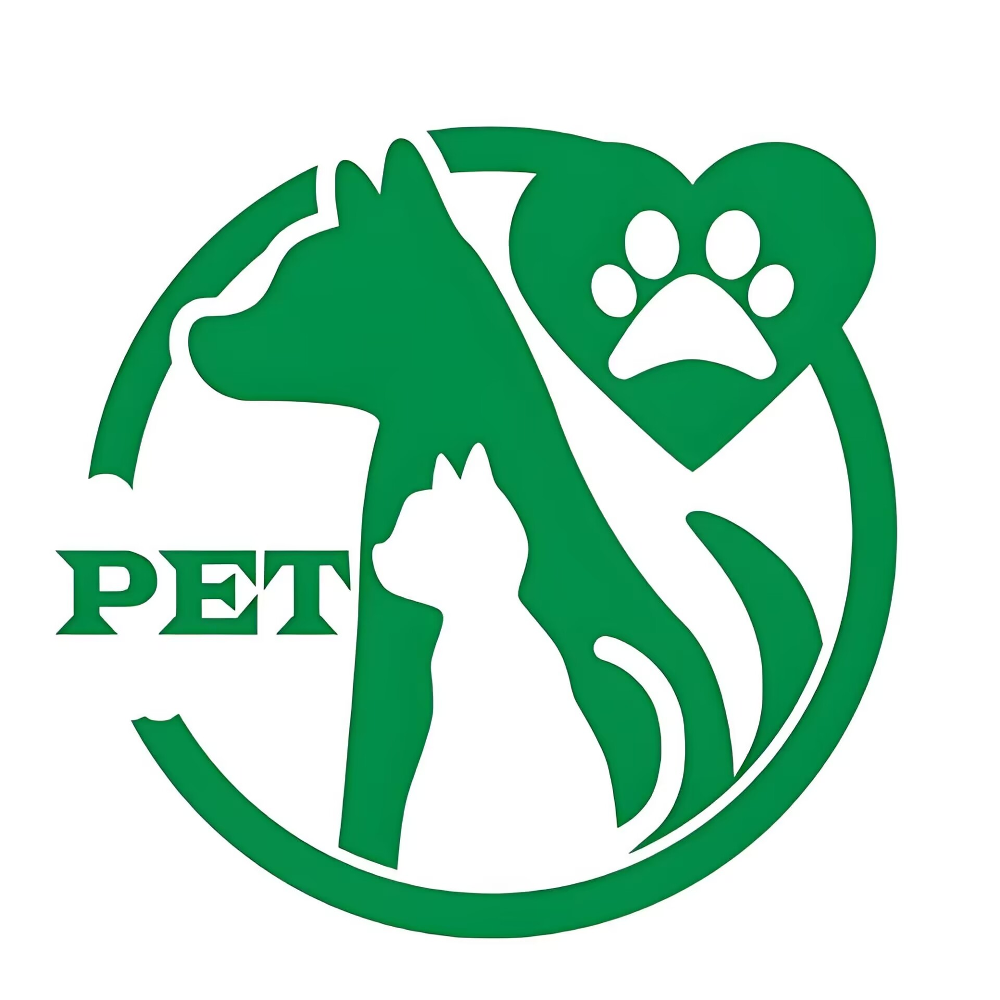 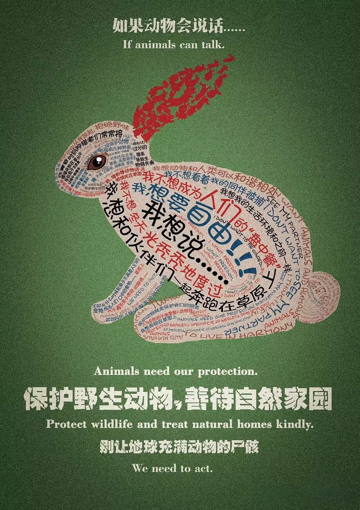 |
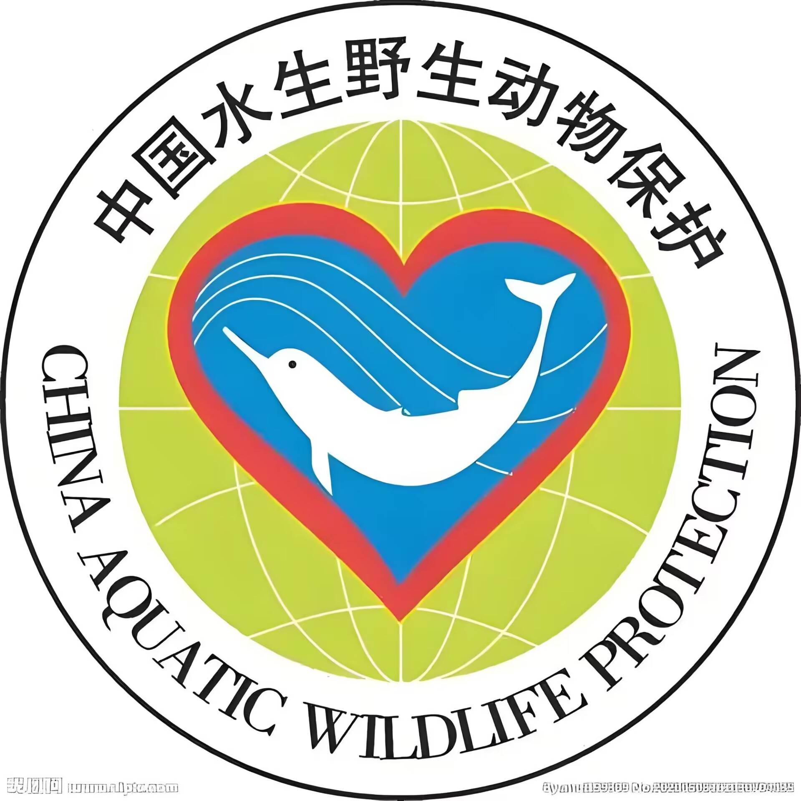 物与生灵，爱和共生 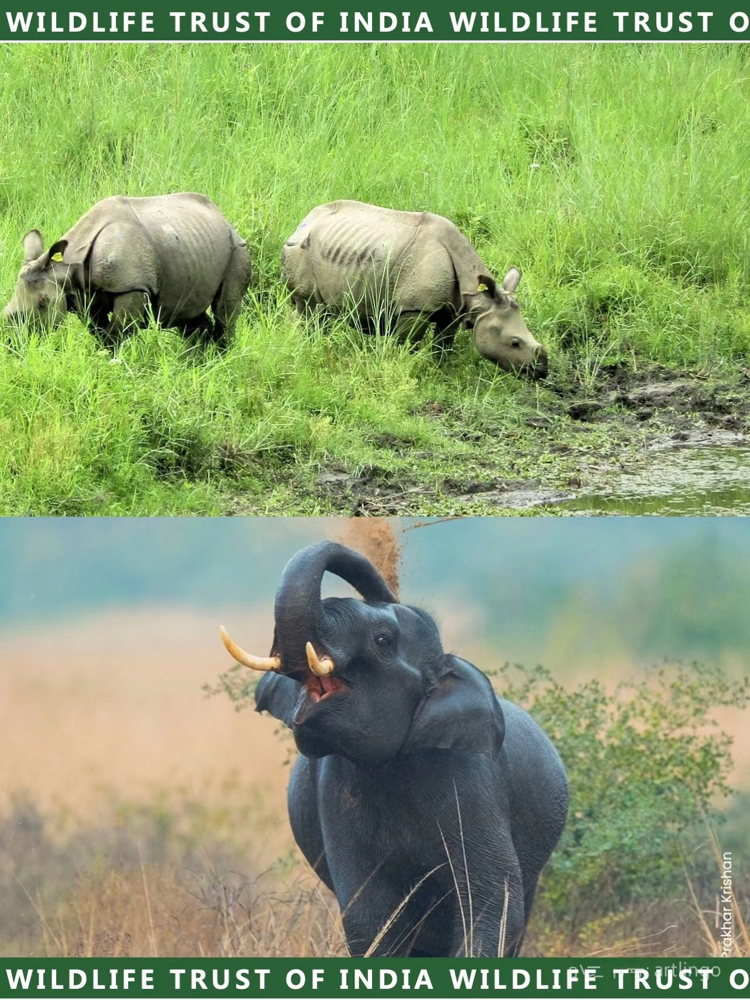 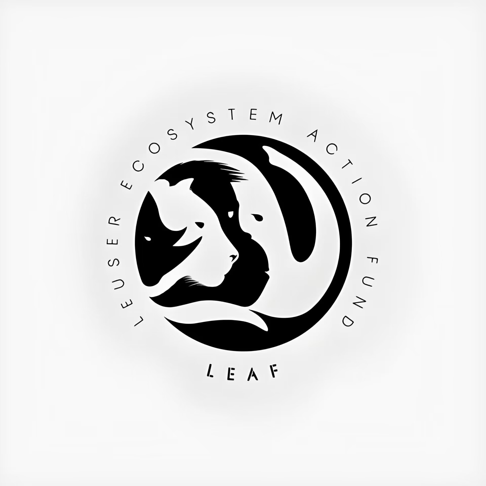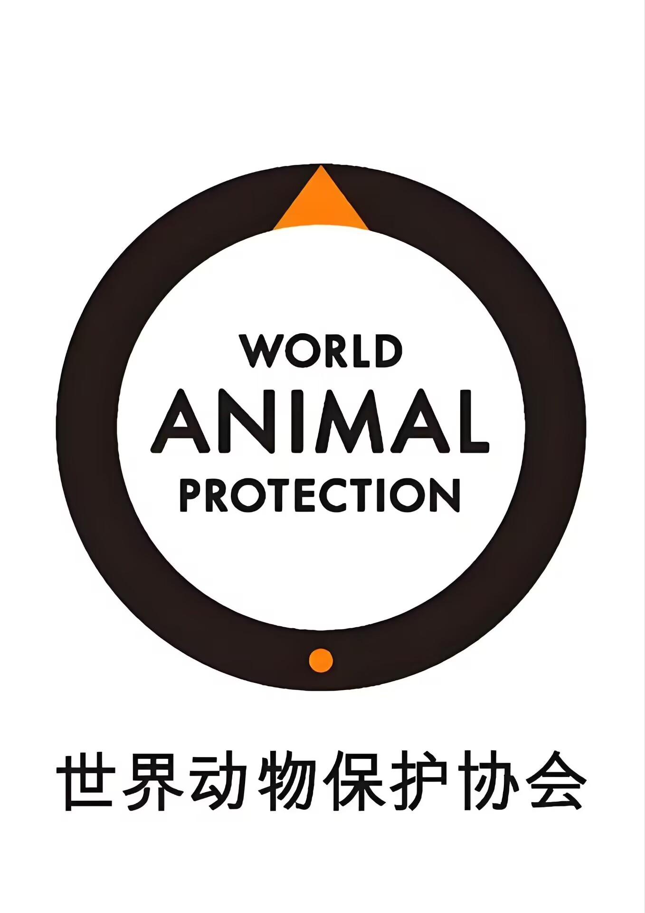 |
| 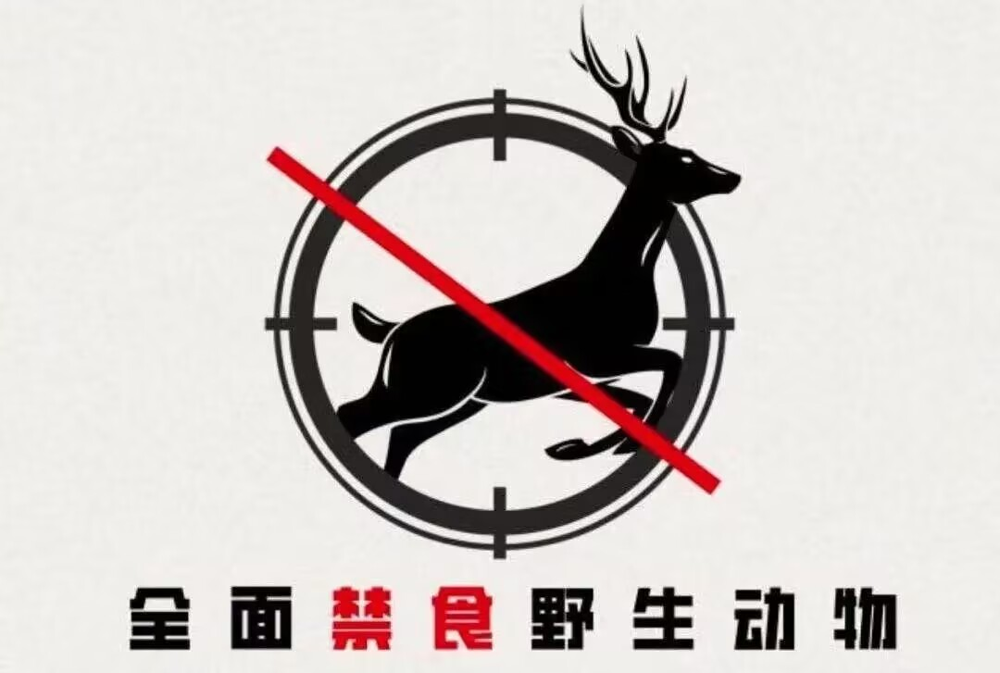 |
| 首页 | 全球动物保护日历 | 濒危动物图鉴 | 国际上采取措施 | 行动指南 | We All Live In The Same Earth , Breathe The Same Air. |